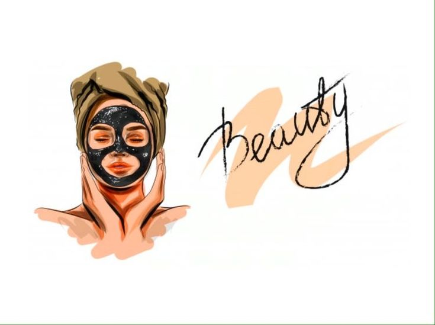
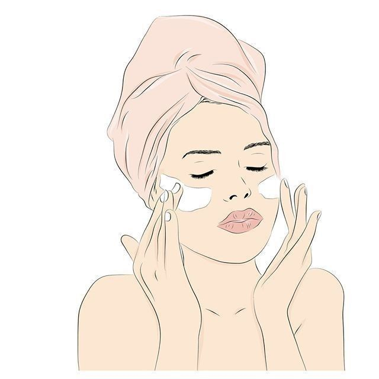
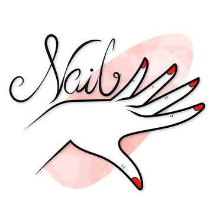
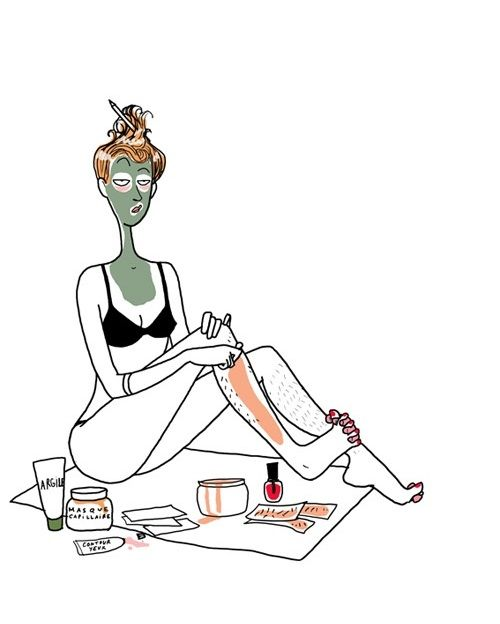

Що таке б'юті-процедури?
Б'юті-процедури — це косметичні заходи, спрямовані на догляд за шкірою, волоссям і тілом. Вони покликані підтримувати здоров'я, красу та омолодження.
Популярні б'юті-процедури
1. Догляд за шкірою обличчя
- Чистка обличчя: Видалення забруднень та чорних цяток.
- Пілінг: Хімічний або механічний метод для відновлення шкіри.
- Маски: Зволоження, очищення та живлення шкіри.
- Лазерна терапія: Лікування акне, видалення пігментів.
2. Антивікові процедури

- Ботокс і філери: Ін'єкції для розгладження зморшок.
- Мезотерапія: Вітамінні коктейлі для омолодження.
- Лімфодренаж: Зняття набряків та покращення кровообігу.
3. Догляд за волоссям

- Маски для волосся: Відновлення та зволоження.
- Кератинове випрямлення: Для блиску та гладкості.
- Фарбування: Омбре, балаяж та інші техніки.
4. Догляд за тілом

- Масажі: Релаксація та корекція фігури.
- Обгортання: Тонізація шкіри.
- Антицелюлітні процедури: Вакуумний масаж, лазер.
5. Манікюр і педикюр
- Гелеве покриття: Тривалий блиск та захист нігтів.
- Нарощування: Для подовження нігтів.
- Декор: Камінці, малюнки та інше.
6. Пілінги та депіляція
- Депіляція: Воскова, лазерна, фотоепіляція.
- Хімічний пілінг: Очищення шкіри тіла.